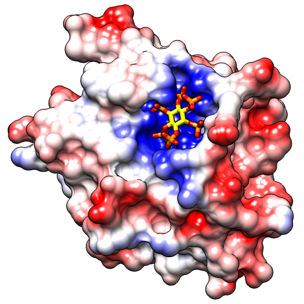

This tutorial describes how to make high-quality images of a protein surface colored by hydrophobicity and electrostatic potential. Note there are several routes to the same or similar results. See also: presets, tips on preparing images
Start Chimera and show the Command Line (for example, with Favorites... Command Line). Fetch Protein Data Bank entry 3eeb:
Command: open 3eebMove and scale the structure as you wish throughout the tutorial. It contains two copies of a protease domain bound to a highly negatively charged small molecule, inositol hexakisphosphate (IHP). Delete one of the copies, chain A, and solvent:
Command: delete :.aThe ligand IHP looks somewhat like a distorted snowflake. IHP binds to a conserved site lined with positively charged groups. The ligand heteroatoms and a nearby sodium ion are colored by element. Show the molecular surface, hide the ion, make sticks fatter, and make ligand carbons yellow:
Command: del solvent
Command: surfaceResize the window as desired, either by dragging its lower right corner with the mouse or by using the command windowsize. The window dimensions define the aspect ratio (width:height) of output images, but image resolution (pixel dimensions) can be specified independently when an image is saved.
Command: ~disp ions
Command: setattr m stickScale 2
Command: color yellow ligand & C
After setup, color the molecular surface by amino acid hydrophobicity on the Kyte-Doolittle scale:
Command: rangecolor kdHydrophobicity min dodger blue 0 white max orange redThis gives the same coloring as the “hydrophobicity surface” preset: from dodger blue for the most hydrophilic, to white, to orange red for the most hydrophobic. The IHP-binding pocket is primarily blue, indicating its hydrophilic character.
However, any colors can be used. The figure shows the result of the following command:
Command: rangecol kdHydrophobicity min medium purple 0 white max tanNow the most polar residues are medium purple and the most hydrophobic are tan. Coloring by residue hydrophobicity and other attributes (B-factor, sequence conservation, etc.) can also be done with the Render by Attribute graphical interface, as in the B-Factor Coloring image tutorial. The graphical interface is also helpful in that it shows the names and value ranges of the available attributes.
The built-in colors can be viewed here or by choosing Actions... Color... all options from the menu and in the resulting dialog, checking the option to Show all colors. Additional colors can be created with the command colordef.
Use a publication preset for nice image settings, including white background, black outlines, and increased smoothness:
Command: preset apply pub 1The example image was saved from a 500x500-pixel window using File... Save Image with default settings.
|  |
After setup, use a publication preset (if not already done):
Command: preset apply pub 1Start Coulombic Surface Coloring (under Tools... Surface/Binding Analysis). This tool calculates electrostatic potential according to Coulomb's law. The colors and associated values can be changed, but for most cases the default settings are suitable. Simply click OK to color from red for negative potential, to white near neutral, to blue for positive potential.
The publication presets provide a nice starting point, but you might want to adjust some settings, such as the thickness of the black outlines:
Command: set silhouetteWidth 3If you prefer a simple “line drawing” appearance, try ambient-only lighting:
Command: light mode ambientTo restore the default lighting mode:
Command: light mode two-pointThe example images were saved from a 500x500-pixel window using File... Save Image with default settings.
There is a limit to how thick lines such as silhouettes, wire, and mesh can be drawn while rendering an image. If supersampling is done, the image is initially drawn at a larger size than requested (3x3 by default) and then sampled back down to the final size. In large and/or supersampled images, lines may be thinner than expected. The File... Save Image dialog reports the effective maximum linewidth. It may be possible to achieve the desired thickness by reducing the supersampling level and/or the pixel dimensions of the image.
After setup, use a publication preset (if not already done):
Command: preset apply pub 1Poisson-Boltzmann (PB) electrostatics calculations take into account spatial variations in the dielectric according to the shape of the molecule. Programs that solve the PB equation include APBS and DelPhi. Chimera can read grid files or “maps” of electrostatic potential from running such programs separately, such as by using the APBS web server or the DelPhi web server.
Opening an electrostatic potential map (.phi or .dx format) automatically starts the Electrostatic Surface Coloring (Surface Color) tool. Opening an electrostatic potential map in the .cube format (such as from the DelPhi web server) instead shows isosurfaces and starts Volume Viewer. However, the isosurfaces can be hidden by clicking the "eye" icon in Volume Viewer (to the right of the step setting), and the Electrostatic Surface Coloring tool can be opened from the menu (under Tools... Surface/Binding Analysis).
The surface coloring dialog allows changing the colors and associated potential values, but for most cases the default settings are suitable. Make sure the dialog is set to color the molecular surface (#0) and click Color to use the standard coloring scheme of red for negative, white for neutral, and blue for positive electrostatic potential. It may take several seconds to read the potential file before coloring occurs. As with Coulombic coloring, the positive potential in the IHP-binding pocket should be clearly evident.
{kind=link}
{kind=link}
{kind=link}